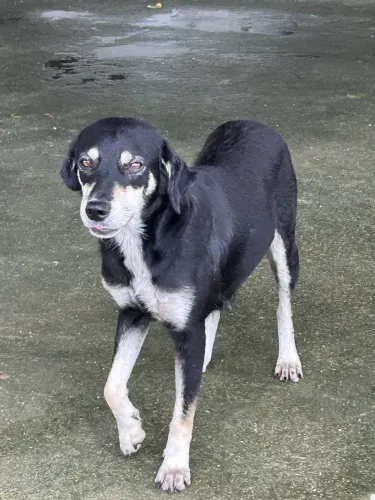

Luna
História | Saúde | Resgate | Voltar para a lista

| Espécie | Cão |
|---|---|
| Idade | 1 ano (aproximada) |
| Porte | Grande |
| Situação | Disponível para adoção |
História
Luna nasceu na rua e foi resgatada com a mãe. Tem muita energia e adora passear e correr.
Saúde
- V10: aplicada
- Antirrábica: aplicada
- Castração: agendada
Resgate
Data: 30/05/2026
Local: Avenida Brasil
Responsável: Ana Souza